# NOTE: generating a single dataset (and fitting single model) to use for all of the following examples
# -> so incorporating lots of aspects into this model (polynomial, interaction, omitted predictor, unnecessary predictor)
# generate predictor data
# -> num_x number of base predictors (assumed known; generated from same dist)
# -> num_noise unimportant predictors (placed at end)
# -> hardcoded 2 higher order / interaction terms (X1^2 and X1*X2)
n <- 50
num_x <- 3
num_noise <- 1
X <- sapply(1:(num_x+num_noise), function(i) {rnorm(n = n, mean = 0, sd = 3)})
Z <- cbind(rep(1, n), X[, c(1:num_x)], X[, 1]^2, X[, 1] * X[ , 2], X[, -c(1:num_x)])
# set betas according to which ones are noise (and intercept)
betas <- c(1, rep(2, num_x+2), rep(0, num_noise))
# generate mean response and add random error
Y <- Z %*% betas + rnorm(n, mean = 0, sd = 5)5.1 Overview
Multiple regression analysis is one of the most widely used of all statistical methods. In this section, we first discuss a variety of multiple regression models.
Since the matrix expressions for multiple regression are the same as for simple linear regression, can just refer to Chapter 4.
The need for multiple predictors
Often times, a single predictor variable in the model provides an inadequate description since a number of key variables affect the response variable in important and distinctive ways.
Furthermore, in situations like this, we frequently find that predictions of the response variable based on a model containing only a single predictor variable are too imprecise to be useful.
Multiple predictors is useful in observational studies when there is no control over the variables as well as in experimental situations where the experimenter can control the \(X\) levels and investigate different combination simultaneously.
5.2 Multiple regression models
5.2.1 First order model with two predictors
When there are two predictor variables \(X_l\) and \(X_2\), the regression model:
\[Y_i = \beta_0 + \beta_1 X_{i1} + \beta_1 X_{i2} + \epsilon_i\]
This model is still linear in its predictors. It follows that if \(E(\epsilon_i) = 0\)
\[E(Y_i) = \beta_0 + \beta_1 X_1 + \beta_1 X_2\]
Note that now predictions are a plane and any point on the response plane corresponds to the mean response \(E(Y)\) at the given combination of levels of \(X_1\) and \(X_2\).

Here the vertical distance from \(Y_i\) to the response plane represents the error term \(\epsilon_i = Y_i - E(Y)\).
Frequently the regression function in multiple regression is called a regression surface or a response surface.
Meaning of regression coefficients
-
The parameter \(\beta_0\) is the intercept of the regression plane.
- If the scope of the model includes \(X_1 = 0\) and \(X_2 = 0\), then \(\beta_0 = 10\) for example represents the mean response \(E(Y)\) at \(X_1 = 0\) and \(X_2 = 0\).
-
The parameter \(\beta_1\) indicates the change in the mean response \(E(Y)\) per unit increase in \(X_1\) when \(X_2\) is held constant. Same but reverse for \(\beta_2\).
For example: If \(E(Y) = 10 + 2X_1 + 5X_2\) and the level of \(X_2\) is held at 2, then \(E(Y) = 10 + 2X_1 + 5(2) = 20 + 2X_1\).
This response function is a straight line with slope \(\beta_1 = 2\). This is true for all other values of \(X_2\), only the value of the intercept changes.
Additive models vs interaction models
When the effect of \(X_1\) on the mean response does not depend on the level of \(X_2\), and correspondingly the effect of \(X_2\) does not depend on the level of \(X_1\), the two predictor variables are said to have additive effects or not to interact.
Thus, the first-order regression model is designed for predictor variables whose effects on the mean response are additive or do not interact.
The parameters \(\beta_1\) and \(\beta_2\) are sometimes called partial regression coefficients because they reflect the partial effect of one predictor variable when the other predictor variable is included in the model and is held constant.
5.2.2 First order model with more than two predictor variables
We consider now the case where there are \(p - 1\) predictor variables \(X_1, \ldots , X_{p-1}\). The regression model:
\[Y_i = \beta_0 + \beta_1 X_{i1} + \beta_1 X_{i2} + \cdots + \beta_{p-1} X_{i,p-1} + \epsilon_i \tag{5.1}\]
is called a first-order model with \(p - 1\) predictor variables. It can also be written as:
\[Y_i = \beta_0 + \sum_{k = 1}^{p - 1} \beta_k X_{ik} + \epsilon_i\]
It follows that if \(E(\epsilon_i) = 0\)
\[E(Y_i) = \beta_0 + \beta_1 X_{i1} + \beta_1 X_{i2} + \cdots + \beta_{p-1} X_{i,p-1}\]
Notes about model:
This response function is a hyperplane, which is a plane in more than two dimensions. It is no longer possible to picture this plane.
The meaning of the parameters is the same as when there were two predictors, just extended to all other \(X\) levels held constant.
This first-order regression model is still designed for predictor variables whose effects on the mean response are additive and therefore do interact.
When \(p - 1 = 1\), this model reduces to the SLR model we are used to.
5.2.3 General linear regression model
In general, the variables \(X_1, \ldots, X_{p-1}\) in a regression model do not need to represent different predictor variables, as we will see soon. Therefore, we define the general linear regression model, with normal error terms, simply in terms of \(X\) variables (same as before, just now more general of what the \(X\)s can represent):
\[Y_i = \beta_0 + \beta_1 X_{i1} + \beta_1 X_{i2} + \cdots + \beta_{p-1} X_{i,p-1} + \epsilon_i \tag{5.2}\]
where
\(\beta_0, \beta_1, \ldots, \beta_{p-1}\) are parameters (note there are \(p\) parameters because of the intercept)
\(X_{i1}, \ldots, X_{i,p-1}\) are known constants
\(\epsilon_i \overset{iid}\sim \text{Normal}\,(0, \sigma^2)\)
\(i = 1, \ldots, n\)
Again since \(E(\epsilon_i) = 0\),
\[E(Y_i) = \beta_0 + \beta_1 X_{i1} + \beta_1 X_{i2} + \cdots + \beta_{p-1} X_{i,p-1}\]
Thus, the general linear regression model with normal error terms implies that the observations \(Y_i\) are independent normal variables, with mean \(E(Y)\) as given by above and with constant variance \(\sigma^2\).
This general linear model encompasses a vast variety of situations. We consider a few of these now.
\(p - 1\) predictor variables
- When \(X_1, \ldots, X_{p-1}\) represent \(p - 1\) different predictor variables, the general linear regression model above is simply Equation 5.1 seen earlier (first-order model in which there are no interaction effects between the predictor variables).
Qualitative predictors
Model in Equation 5.2 encompasses not only quantitative predictor variables but also qualitative ones.
We use indicator variables that take on the values 0 and 1 to identify the classes of a qualitative variable. For example if length of hospital stay \(Y\) with \(X_1\) = age and \(X_2\) = gender of patient where:
\[ X_2 = \left\{ \begin{array}{ll} 0 & \text{female}\\ 1 & \text{male} \end{array} \right. \]
- The first-order regression model is (with variables defined above):
\[Y_i = \beta_0 + \beta_1 X_{i1} + \beta_2 X_{i2} + \epsilon_i\] - The response function is
\[E(Y_i) = \beta_0 + \beta_1 X_{i1} + \beta_1 X_{i2}\]
- For female patients, \(X_2 = 0\) and the response function becomes
\[E(Y_i) = \beta_0 + \beta_1 X_{i1}\] - For male patients, \(X_2 = 1\) and the response function becomes
\[E(Y_i) = (\beta_0 + \beta_2) + \beta_1 X_{i1}\]
These two response functions represent parallel straight lines with different intercepts.
In general, we represent a qualitative variable with \(c\) classes by means of \(c - 1\) indicator variables.
Polynomial regression
Polynomial regression models are special cases of the general linear regression model. They contain squared and higher-order terms of the predictor variable(s), making the response function curvilinear.
The following is a polynomial regres’sion model with one predictor variable:
\[Y_i = \beta_0 + \beta_1 X_i1 + \beta_2 X_i^2+ \epsilon_i\]
- Despite the curvilinear nature of the response function for regression model above, it is a special casee of general linear regression model Equation 5.2. If we let \(X_{i1} = X_i\) and \(X_{i2} = X_i^2\), we can write the above model in the same format as usual:
\[Y_i = \beta_0 + \beta_1 X_{i1} + \beta_2 X_{i2} + \epsilon_i\]
Transformed variables
- Models with transformed variables involve complex, curvilinear response functions, yet still are special cases of the general linear regression model. Consider the following model with transformed \(Y\) variable
\[\ln(Y_i) = \beta_0 + \beta_1 X_{i1} + \beta_2 X_{i2} + \beta_3 X_{i3} + \epsilon_i\] - Here, the response surface is complex, yet this model can still be treated as a general linear regression model if we let \(Y_i' = \ln(Y_i)\). Then just write the regression model as:
\[Y_i' = \beta_0 + \beta_1 X_{i1} + \beta_2 X_{i2} + \beta_3 X_{i3} + \epsilon_i\]
This has the same form as Equation 5.2, the response variable just happens to be the natural logarithm of \(Y\).
Many models can be transformed into the g’enerallinear regression model. For example, take this model:
\[Y_i = \frac{1}{\beta_0 + \beta_1 X_{i1} + \beta_2 X_{i2} + \epsilon_i}\]
- It can be transformed to the general linear regression model by letting \(Y_i' = 1/Y_i\). Then we have
\[Y_i' = \beta_0 + \beta_1 X_{i1} + \beta_2 X_{i2} + \epsilon_i\]
Interaction effects
When the effects of the predictor variables on the response variable are not additive, the effect of one predictor variable depends on the levels of the other predictor variables.
Our general linear regression model encompasses regression models with nonadditive or interacting effects. An example of a nonadditive regression model with two predictor variables \(X_1\) and \(X_2\) is the following:
\[Y_i = \beta_0 + \beta_1 X_{i1} + \beta_2 X_{i2} + \beta_3 X_{i1} X_{i2} + \epsilon_i\] - Here the response function is complex because of the interaction term \(\beta_3 X_{i1} X_{i2}\). Yet this regression model is still a special case of the general linear regression model. Let \(X_3i = X_{i1} X_{i2}\) and then write the model as:
\[Y_i = \beta_0 + \beta_1 X_{i1} + \beta_2 X_{i2} + \beta_3 X_{i3} + \epsilon_i\]
Combination of cases
- A regression model may combine several of the elements we have just noted and still be treated as a general linear regression model.
- Examples of complex regression surfaces for two predictors:
 Meaning of linear in general linear regression model
Meaning of linear in general linear regression model
It should be clear from the various examples that general linear regression model Equation 5.2 is not restricted to linear response surfaces.
The term linear model refers to the fact that the model is linear in the parameters; it does-not refer to the shape of the response surface.
We say that a regression model is linear in the parameters when it can be written in the form:
\[Y_i = c_{i0} \beta_0 + c_{i1} \beta_1 + c_{i2} \beta_2 + \cdots + c_{i,p-1} \beta_{p-1} + \epsilon_i \tag{5.3}\]
- Here the terms \(c_{i0}, c_{i1}, \ldots\) are coefficients involving the predictor variables. For example, take the first-order model with two variables:
\[Y_i = \beta_0 + \beta_1 X_{i1} + \beta_1 X_{i2} + \epsilon_i\]
This is linear in parameters with \(c_{i0} = 1\), \(c_{i1} = X_{i1}\) and \(c_{i2} = X_{i2}\).
An example of a nonlinear regression model is the following:
\[Y_i = \beta_0 \mathrm{e}^{\beta_1 X_i} + \epsilon_i\]
- This is a nonlinear regression model because it cannot be expressed in the form of Equation 5.3.
5.3 General linear regression model in matrix terms
It is a remarkable property of matrix algebra that the results for the general linear regression model Equation 5.2 in matrix notation appear exactly as those for the simple linear regression model Equation 4.1. Only the degrees of freedom and other constants related to the number of \(X\) variables and the dimensions of some matrices are different. Hence, We are able to present the results very concisely.
We need the following matrices:
Everything is just extended to \(p\) parameters and \(p - 1\) predictor variables.
In matrix terms, the general linear regression model Equation 5.2 is:
\[\underset{n \times 1}{\boldsymbol{Y}} = \underset{n \times p}{\boldsymbol{X}} \, \underset{p \times 1}{\boldsymbol{\beta}} + \underset{n \times 1}{\boldsymbol{\epsilon}} \hspace{10pt} \text{and} \hspace{10pt} \underset{n \times 1}{\boldsymbol{E(Y)}} = \underset{n \times 1}{\boldsymbol{X\beta}} \tag{5.4}\]
5.3.1 Estimation of regression coefficients, fitted values and residuals
This is also the exact same, just extended (see Section 4.3).
\(\underset{p \times 1}{\boldsymbol{\hat{\beta}}} = (\underset{p \times p}{\boldsymbol{X'X}})^{-1}\underset{p \times 1}{\boldsymbol{X'Y}}\)

Demo
(True) Population model: \(Y = \beta_0 + \beta_1 Z_1 + \beta_2 Z_2 + \beta_3 Z_3 + \beta_4 Z_4 + \beta_5 Z_5 + \epsilon_i\)
where \(\hspace{10pt} Z_1 = X_1, Z_2 = X_2, Z_3 = X_3, Z_4 = X_1^2, Z_5 = X_1 X_2 \hspace{10pt} \text{and} \hspace{10pt} \epsilon_i \overset{iid}\sim \text{Normal}\,(0, \sigma^2)\)
(Fitted) Population model: \(Y = \beta_0 + \beta_1 X_1 + \beta_2 X_2 + \beta_3 X_4 + \beta_5 X_1^2 + \beta_6 X_2 X_3\)
# create dataframe of sample data using above
data_sample <- cbind(Y, X) %>% data.frame
colnames(data_sample) <- c("Y", paste0("X",1:(length(data_sample)-1)))
# fit mlr regression model
# -> omitting X3, adding in unnecessary predictor X4, and adding in correct higher order terms
mod_mlr <- lm(Y ~ X1 + X2 + X4 + I(X1^2) + I(X1*X2), data = data_sample, x = TRUE)
# view model summary
# now using broom functions
# -> see expected results
broom::tidy(mod_mlr)# A tibble: 6 × 5
term estimate std.error statistic p.value
<chr> <dbl> <dbl> <dbl> <dbl>
1 (Intercept) 1.74 1.55 1.12 2.70e- 1
2 X1 2.11 0.471 4.47 5.38e- 5
3 X2 1.57 0.409 3.85 3.77e- 4
4 X4 0.264 0.429 0.615 5.42e- 1
5 I(X1^2) 2.06 0.137 15.1 5.40e-19
6 I(X1 * X2) 1.95 0.206 9.47 3.50e-12Now comparing lots of things
# extract design matrix from model for simplicity
design <- mod_mlr$x
# estimate coefficients
# -> betas_hat = (X'X)^(-1) X'Y
betas_hat <- solve(t(design) %*% design) %*% t(design) %*% Y
compare(coef(mod_mlr), betas_hat)$comparison
$comparison$result
[1] FALSE
$comparison$description
[1] "Attributes: < names for current but not for target >"
[2] "Attributes: < Length mismatch: comparison on first 0 components >"
[3] "target is numeric, current is matrix"
$comparison$`element-wise`
[1] TRUE TRUE TRUE TRUE TRUE TRUE
$`coef(mod_mlr)`
(Intercept) X1 X2 X4 I(X1^2) I(X1 * X2)
1.7351776 2.1069293 1.5742790 0.2635299 2.0604271 1.9498712
$betas_hat
[,1]
(Intercept) 1.7351776
X1 2.1069293
X2 1.5742790
X4 0.2635299
I(X1^2) 2.0604271
I(X1 * X2) 1.9498712# fitted values
y_hat <- design %*% betas_hat
compare(fitted(mod_mlr), as.numeric(y_hat), return_items = FALSE)$comparison
[1] TRUE5.3.2 ANOVA
Sum of squares are the exact same as in Section 4.4, just the degrees of freedom are adjusted for the mean squares.
\(SSTO\) has the usual \(n - 1\) df.
\(SSE\) had \(n - p\) df due to \(p\) parameters needed to be estimated in the regression model Equation 5.4.
\(SSR\) has \(p - 1\) df, representing the number of \(X\) variables \(X_1, \ldots, X_{p-1}\) (one minus the number of parameters because the intercept doesn’t count)
\[MSR = \frac{SSR}{p - 1} \hspace{20pt} MSE = \frac{SSE}{n - p}\]


Demo
Returning to the demo in Section 5.3.
# calculate anova table
(at <- mod_mlr %>% anova %>% broom::tidy())# A tibble: 6 × 6
term df sumsq meansq statistic p.value
<chr> <int> <dbl> <dbl> <dbl> <dbl>
1 X1 1 14562. 14562. 211. 2.11e-18
2 X2 1 2291. 2291. 33.2 7.49e- 7
3 X4 1 852. 852. 12.4 1.03e- 3
4 I(X1^2) 1 26138. 26138. 379. 3.00e-23
5 I(X1 * X2) 1 6183. 6183. 89.7 3.50e-12
6 Residuals 44 3035. 69.0 NA NA # calculate sum of squares using quadratic forms
# -> SSTO = Y'[I-(1/n)J]Y
SSTO <- t(Y) %*% (diag(x = 1, nrow = length(Y)) - (1 / length(Y)) * matrix(data = rep(1, length(Y)^2), nrow = length(Y), ncol = length(Y))) %*% Y
# -> SSE = Y'(I-H)Y
hat_matrix <- design %*% solve(t(design) %*% design) %*% t(design)
SSE <- t(Y) %*% (Matrix::diag(x = 1, nrow = length(Y)) - hat_matrix) %*% Y
compare(as.numeric(sse), as.numeric(SSE))$comparison
[1] TRUE
$`as.numeric(sse)`
[1] 3034.76
$`as.numeric(SSE)`
[1] 3034.76# -> SSR = Y'[H-(1/n)J]Y
SSR <- t(Y) %*% (hat_matrix - (1 / length(Y)) * matrix(data = rep(1, length(Y)^2), nrow = length(Y), ncol = length(Y))) %*% Y
compare(as.numeric(ssr), as.numeric(SSR))$comparison
[1] TRUE
$`as.numeric(ssr)`
[1] 50027.51
$`as.numeric(SSR)`
[1] 50027.515.3.3 F-test for regression relation

Returning to the demo in Section 5.3.
# get f-stat model summary
# -> looking for statistic
broom::glance(mod_mlr)# A tibble: 1 × 12
r.squared adj.r.squared sigma statistic p.value df logLik AIC BIC
<dbl> <dbl> <dbl> <dbl> <dbl> <dbl> <dbl> <dbl> <dbl>
1 0.943 0.936 8.30 145. 3.55e-26 5 -174. 361. 375.
# ℹ 3 more variables: deviance <dbl>, df.residual <int>, nobs <int>Continuing with sum of squares calculated from previous demo in Section 5.3.2.
# calculate sum of squares using quadratic forms
# -> F = MSR / MSE = (SSR / df_R) / (SSE / df_E)
MSR <- SSR / (length(betas_hat) - 1)
MSE <- SSE / (length(Y) - length(betas_hat))
F_stat <- MSR / MSE
# extract mse from model summary
# -> df = dr_R and df.residual = df_E -> used to get p-value of F-stat
mse <- broom::glance(mod_mlr)$sigma^2
compare(as.numeric(mse), as.numeric(MSE))$comparison
[1] TRUE
$`as.numeric(mse)`
[1] 68.97183
$`as.numeric(MSE)`
[1] 68.97183compare(broom::glance(mod_mlr)$statistic, as.numeric(F_stat))$comparison
[1] TRUE
$`broom::glance(mod_mlr)$statistic`
value
145.0665
$`as.numeric(F_stat)`
[1] 145.06655.3.4 Coefficient of multiple determination
The coefficient of multiple determination \(R^2\) is the same as in SLR:
\[R^2 = \frac{SSR}{SSTO} = 1 - \frac{SSE}{SSTO}\]
It measures the proportionate reduction of total variation in \(Y\) associated with the use of the set of X variables \(X_1, \ldots , X_{p_1}\).
Adding more \(X\) variables to the regression model can only increase \(R^2\) and never reduce it, because \(SSE\) can never become larger with more \(X\) variables and \(SSTO\) is always the same for a given set of responses.
Therefore, we often use the adjusted coefficient of multiple determination \(R^2_{adj}\). It adjusts \(R^2\) by dividing each sum of squares by its respective df.
\[R^2_{adj} = 1 - \Big(\frac{SSE}{n - p}\Big) \Big/ \Big(\frac{SSTO}{n - 1}\Big) = 1 - \big(\frac{n - 1}{n - p}\big) \frac{SSE}{SSTO}\]
This adjusted coefficient of multiple determination may actually become smaller when another \(X\) variable is introduced into the model, because any decrease in \(SSE\) may be more than offset by the loss of a degree of freedom in the denominator \(n - p\).
Notes
It can be shown that the coefficient of multiple determination \(R^2\)can be viewed as a coefficient of simple determination between the responses \(Y_i\) and the fitted values \(\hat{Y}_i\).
-
A large value of \(R^2\) does not necessarily imply that the fitted model is a useful one.
For instance, observations may have been taken at only a few levels of the predictor variables. Despite a high \(R^2\) in this case, the fitted model may not be useful if most predictions require extrapolations outside the region of observations.
Again, even though \(R^2\) is large, \(MSE\) may still be too large for inferences to be useful when high precision is required.
Returning to the demo in Section 5.3.
# view model statistics
# -> looking at r.squared and adj.r.squared
broom::glance(mod_mlr)# A tibble: 1 × 12
r.squared adj.r.squared sigma statistic p.value df logLik AIC BIC
<dbl> <dbl> <dbl> <dbl> <dbl> <dbl> <dbl> <dbl> <dbl>
1 0.943 0.936 8.30 145. 3.55e-26 5 -174. 361. 375.
# ℹ 3 more variables: deviance <dbl>, df.residual <int>, nobs <int>Continuing with sum of squares calculated from a previous demo in Section 5.3.2.
# calculate coefficient of determination
# -> R^2 = SSR / SSTO = 1 - SSE / SSTO
R2 <- SSR / SSTO
R2 <- 1 - SSE / SSTO
compare(as.numeric(broom::glance(mod_mlr)$r.squared), as.numeric(R2))$comparison
[1] TRUE
$`as.numeric(broom::glance(mod_mlr)$r.squared)`
[1] 0.9428076
$`as.numeric(R2)`
[1] 0.9428076# calculate adjusted coefficient of determination
# -> R^2 = 1 - (n - 1) / (n - p) SSE / SSTO
R2_adj <- 1 - (length(Y) - 1) / (length(Y) - length(betas_hat)) * SSE / SSTO
compare(as.numeric(broom::glance(mod_mlr)$adj.r.squared), as.numeric(R2_adj))$comparison
[1] TRUE
$`as.numeric(broom::glance(mod_mlr)$adj.r.squared)`
[1] 0.9363084
$`as.numeric(R2_adj)`
[1] 0.93630845.3.5 Coefficient of multiple correlation
The coefficient of multiple correlation \(R\) is the positive square root of \(R^2\):
\[R = \sqrt{R^2}\]
When there is only one variable in the model, thec oefficient of multiple correlation \(R\) equals in absolute value the correlation coefficient \(r\) in SLR.
5.3.6 Inferences about regression parameters
Demo
- Returning to the demo in Section 5.3.
# view coefficient summaries
# -> looking at std.error, statistic and p.value columns
(summ1 <- broom::tidy(mod_mlr))# A tibble: 6 × 5
term estimate std.error statistic p.value
<chr> <dbl> <dbl> <dbl> <dbl>
1 (Intercept) 1.74 1.55 1.12 2.70e- 1
2 X1 2.11 0.471 4.47 5.38e- 5
3 X2 1.57 0.409 3.85 3.77e- 4
4 X4 0.264 0.429 0.615 5.42e- 1
5 I(X1^2) 2.06 0.137 15.1 5.40e-19
6 I(X1 * X2) 1.95 0.206 9.47 3.50e-12# just going to recreate the p-value from given info
(summ2 <- broom::glance(mod_mlr))# A tibble: 1 × 12
r.squared adj.r.squared sigma statistic p.value df logLik AIC BIC
<dbl> <dbl> <dbl> <dbl> <dbl> <dbl> <dbl> <dbl> <dbl>
1 0.943 0.936 8.30 145. 3.55e-26 5 -174. 361. 375.
# ℹ 3 more variables: deviance <dbl>, df.residual <int>, nobs <int># verify t-stat = estimate / std.error
compare(as.numeric(summ1[2,4]), as.numeric(summ1[2,2] / summ1[2,3]))$comparison
[1] TRUE
$`as.numeric(summ1[2, 4])`
[1] 4.472731
$`as.numeric(summ1[2, 2]/summ1[2, 3])`
[1] 4.472731# calculate p-value from theoretical (beta_k-hat - beta_k)/ SE(\beta_k-hat) ~ t_(n-p)
p_value <- pt(q = as.numeric(summ1[2,4]), df = summ2$df.residual, lower.tail = FALSE)*2
compare(as.numeric(summ1[2,5]), p_value)$comparison
[1] TRUE
$`as.numeric(summ1[2, 5])`
[1] 0.00005378785
$p_value
[1] 0.00005378785# calculate confidence interval for single coefficient
# -> remember these are all individual inferences, not simultaneous confidence intervals
confint(mod_mlr)[2, ] 2.5 % 97.5 %
1.157568 3.056290 # calculate lower and upper bounds
alpha <- 0.05
bound_lower <- as.numeric(summ1[2, 2]) + qt(alpha / 2, df = summ2$df.residual) * as.numeric(summ1[2,3])
bound_upper <- as.numeric(summ1[2, 2]) + qt(1 - alpha / 2, df = summ2$df.residual) * as.numeric(summ1[2,3])
compare(as.numeric(confint(mod_mlr)[2, ]), c(bound_lower, bound_upper))$comparison
[1] TRUE
$`as.numeric(confint(mod_mlr)[2, ])`
[1] 1.157568 3.056290
$`c(bound_lower, bound_upper)`
[1] 1.157568 3.056290
5.3.7 Estimation of mean response and prediction of new observation


5.4 Diagnostics and remedial measures
Diagnostics play an impol1ant role in the development and evaluation of multiple regression models. Most of the diagnostic procedures and remedial meausures for simple linear regression that we described in Chapter 3 carry over directly to multiple regression.
Scatterplot matrix
Box plots, sequence plots, and dot plots for each of the predictor variables and for the response variable can provide helpful, preliminary univariate information about these variables.
Scatter plots of the \(Y\) against each \(X\) can aid in determining the nature and strength of the bivariate relationships and in identifying gaps in the data points as well as outlying data points. Scatter plots of \(X\) against each of the other \(X\)s provide similar information.
A complement to the scatter plot matrix that may be useful at times is the correlation matrix (matrix format as \([Y, X]\)). Note this is a symmetric matrix with 1 on the main diagonal, so often can just print the upper or lower traingle matrix.

Demo
Returning to the demo in Section 5.3.
# scatterplot matrix (of just the Xs, not the transformed variables as well)
pairs(data_sample)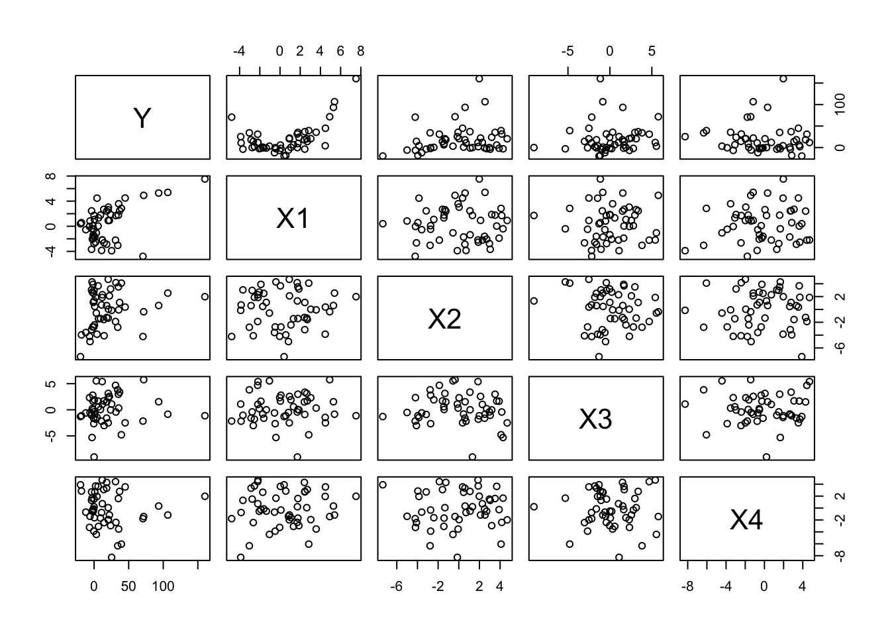
Y X1 X2 X3 X4
Y 1.000 0.524 0.221 0.094 -0.076
X1 0.524 1.000 0.026 0.023 0.086
X2 0.221 0.026 1.000 -0.105 0.026
X3 0.094 0.023 -0.105 1.000 0.003
X4 -0.076 0.086 0.026 0.003 1.000# correlation plot
corrplot::corrplot(r)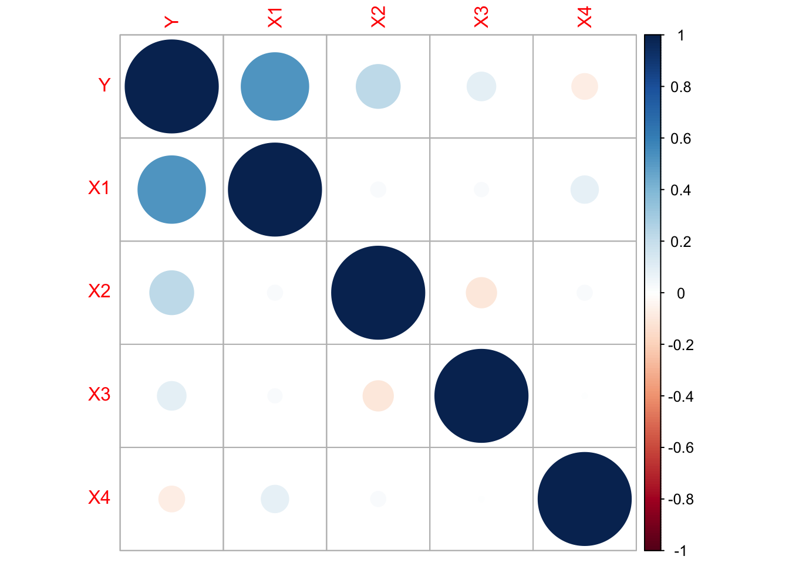
# upper triangle correlation matrix
r[lower.tri(r)] <- NA
r Y X1 X2 X3 X4
Y 1 0.524 0.221 0.094 -0.076
X1 NA 1.000 0.026 0.023 0.086
X2 NA NA 1.000 -0.105 0.026
X3 NA NA NA 1.000 0.003
X4 NA NA NA NA 1.000Residual plots
Same as for SLR, a plot of the residuals against the fitted values is useful for assessing the appropriateness of the multiple regression function and the constancy of the variance of the error terms, as well as for providing information about outliers.
Box plots and normal probability plots of the residuals are useful for examining whether the error terms are reasonably normally distributed.
In addition, residuals should be plotted against each of the predictor variables. Each of these plots can provide further information about the adequacy of the regression function with respect to that predictor variable (e.g., whether a curvature effect is required for that variable) and about possible variation in the magnitude of the error variance in relation to that predictor variable.
Residuals should also be plotted against important predictor variables that were omitted from the model, to see if the omitted variables have substantial additional effects on the response variable that have not yet been recognized in the regression model.
Also, residuals should be plotted against interaction terms for potential interaction effects not included in the regression model, such as against \(X_1 X_2\), \(X_1 X_3\), and \(X_2 X_3\), to see whether some or all of these interaction terms are required in the model.
-
A plot of the absolute residuals or the squared residuals against the fitted values is useful for examining the constancy of the variance of the error terms.
- If nonconstancy is detected, a plot of the absolute residuals or the squared residuals against each of the predictor vaIiables may identify one or several of the predictor variables to which the magnitude of the error variability is related.
Demo
Remedial measures
The remedial measures described previously are also applicable to multiple regression.
-
When a more complex model is required to recognize curvature or interaction effects, the multiple regression model can be expanded to include these effects.
- For example, \(X_2^2\) might be added as a variable to take into account a curvature effect of \(X_2\), or \(X_1 X_3\) might be added as a variable to recognize an interaction effect between \(X_1\) and \(X_3\) on the response variable.
-
Alternatively, transformations on the response and/or the predictor variables can be made as discussed before.
Transformations on the response variable may be helpful when the distributions of the error terms are quite skewed and the variance of the error terms is not constant.
Transformations of some of the predictor variables may be helpful when the effects of these variables are curvilinear.
In addition, transformations on \(Y\) and or the predictor variables may be helpful in eliminating or substantially reducing interaction effects.
As with simple linear regression, the usefulness of potential transformations needs to be examined by means of residual plots and other diagnostic tools to determine whether the multiple regression model for the transformed data is appropriate.
Can still do the Box Cox transformation (Section 3.7.3) like usual.
Demo
# run boxcox procedure
# -> plot MLE of lambda
MASS::boxcox(mod_mlr)Error in boxcox.default(mod_mlr): response variable must be positive# add constant to response variable so can run box-cox
# -> from simulation for 'effects of constants and scalars', adding constant to Y only changes the intercept -> still valid model
mod_mlr_prime <- lm(Y+50 ~ X1 + X2 + X4 + I(X1^2) + I(X1*X2), data = data_sample)
# try again
MASS::boxcox(mod_mlr_prime)# lambda = 1 -> no transformation is needed, as expected5.4.1 Residual plots demo for various misfitting models
Create residual plots against each \(X\) in data.
# get residuals
e <- residuals(mod_mlr)
# plot against each X
nms_x <- colnames(data_sample[, -1])
map2(data_sample[,-1], nms_x, function(x, nm) {
plot(x = x, y = e, main = nm)
lines(lowess(x = x, y = e), col = "red")
abline(h = 0, col = "grey")
})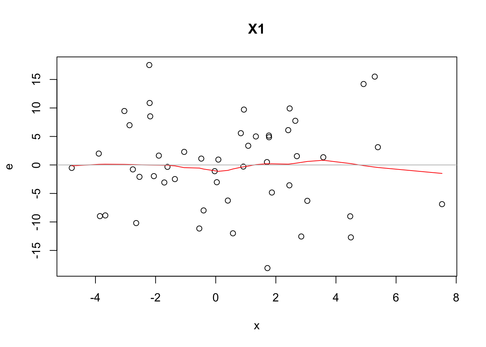
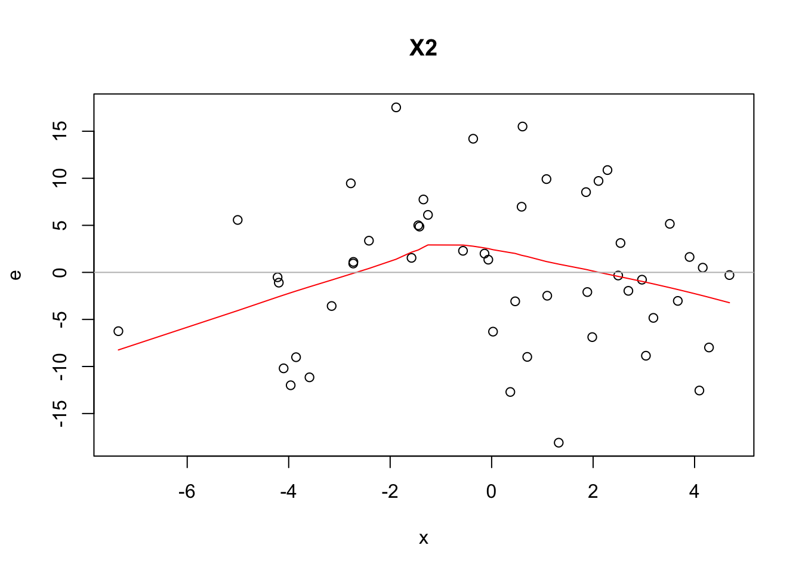
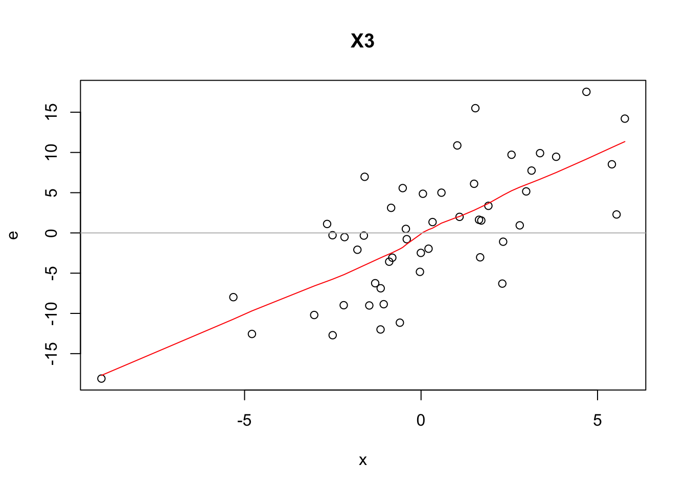
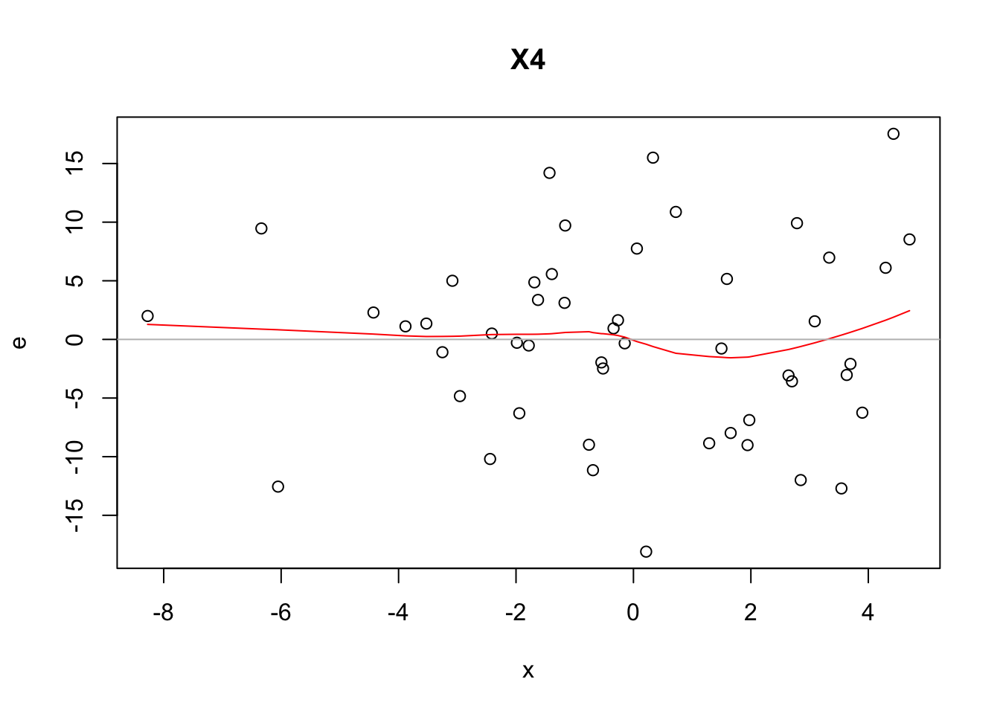
$X1
NULL
$X2
NULL
$X3
NULL
$X4
NULLNote that there is no pattern for important predictors included in the model or for the unnecessary predictor. BUT for the important predictor \(X_3\) omitted from the model, there is clear systematic deviation!
This indicates that it should be in the model.
Create residual plots.
# fit new model without polyomial predictor
mod_no_poly <- update(mod_mlr, . ~ . - I(X1^2))
broom::tidy(mod_no_poly)# A tibble: 5 × 5
term estimate std.error statistic p.value
<chr> <dbl> <dbl> <dbl> <dbl>
1 (Intercept) 16.8 2.92 5.73 0.000000789
2 X1 5.04 1.05 4.78 0.0000192
3 X2 1.89 1.00 1.89 0.0655
4 X4 0.977 1.05 0.934 0.355
5 I(X1 * X2) 3.01 0.475 6.33 0.000000103# see residuals vs fitted
plot(mod_no_poly)
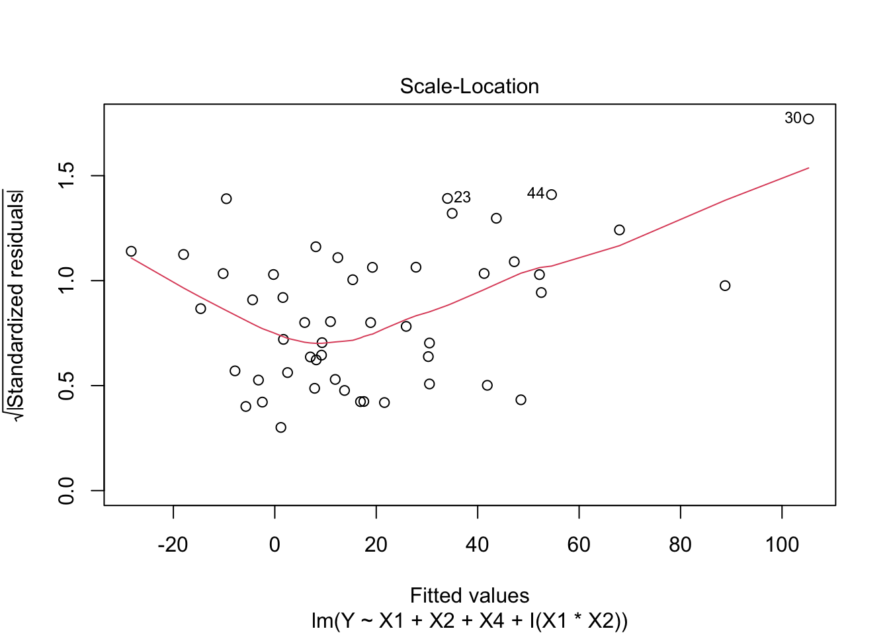
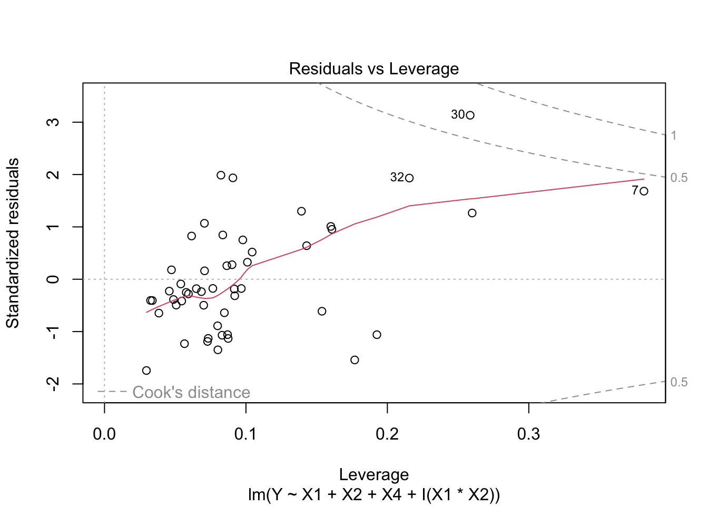
# get residuals
e <- residuals(mod_no_poly)
# plot against each X
nms_x <- colnames(data_sample[, -1])
map2(data_sample[,-1], nms_x, function(x, nm) {
plot(x = x, y = e, main = nm)
lines(lowess(x = x, y = e), col = "red")
abline(h = 0, col = "grey")
})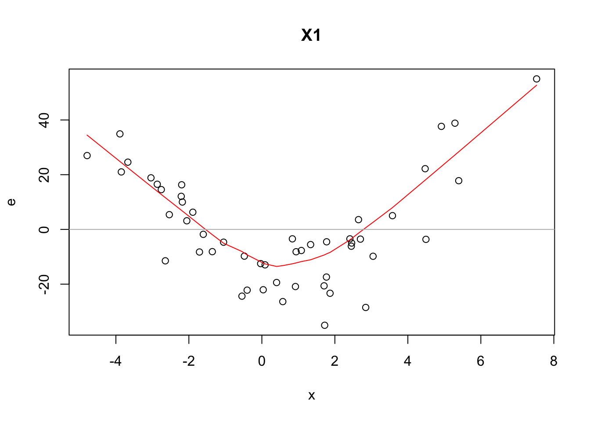
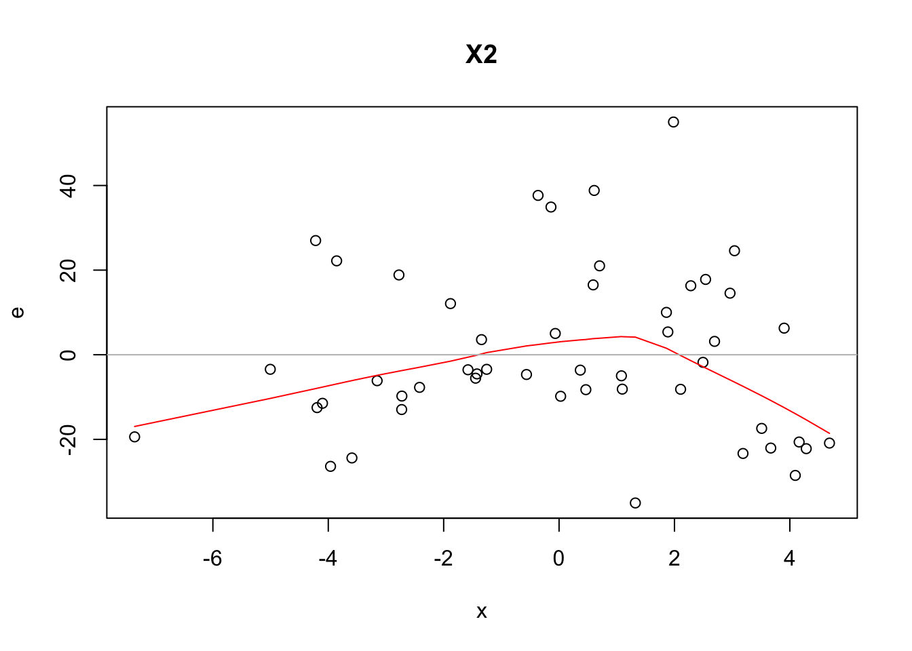
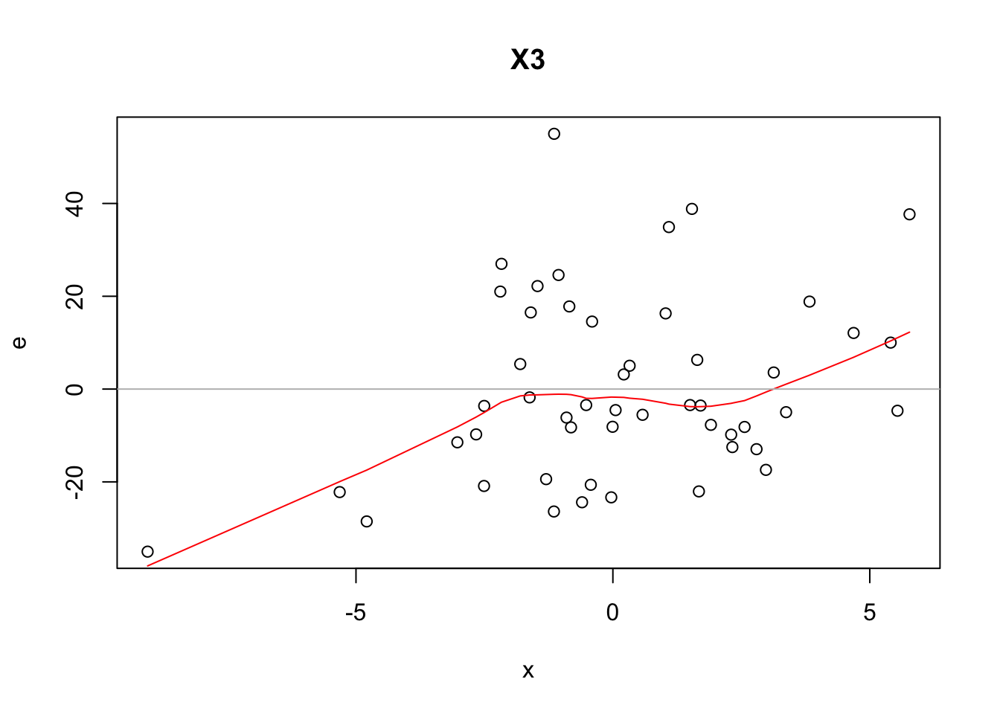
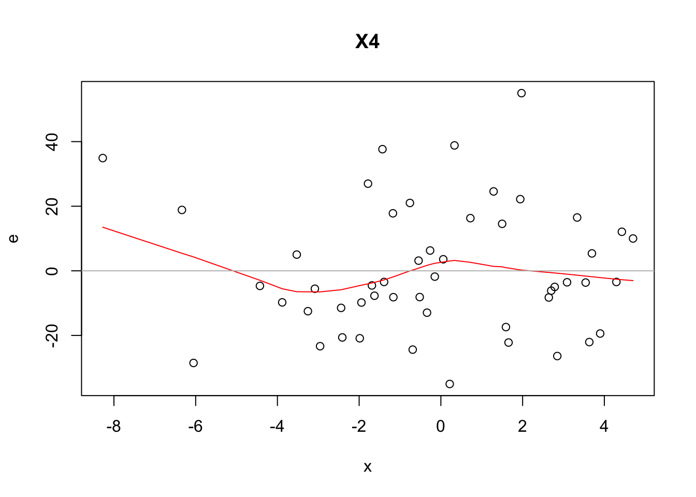
$X1
NULL
$X2
NULL
$X3
NULL
$X4
NULLNote that there is curvature in the residuals vs fitted. Then when viewing vs each predictor, it is clear that it comes from \(X_1\)!
This indicates that a polynomial term for \(X_1\) should be in the model.
Also note that missing the polynomial term hides the effect of missing \(X_3\) \(\Longrightarrow\) Need to model the terms in there correctly first before looking at more variables.
Create residual plots.
# fit new model without polyomial predictor
mod_no_interaction <- update(mod_mlr, . ~ . - I(X1*X2))
broom::tidy(mod_no_interaction)# A tibble: 5 × 5
term estimate std.error statistic p.value
<chr> <dbl> <dbl> <dbl> <dbl>
1 (Intercept) -1.59 2.61 -0.609 5.46e- 1
2 X1 2.14 0.812 2.63 1.15e- 2
3 X2 1.79 0.703 2.54 1.47e- 2
4 X4 -1.25 0.685 -1.82 7.48e- 2
5 I(X1^2) 2.50 0.221 11.3 9.98e-15# see residuals vs fitted
plot(mod_no_interaction)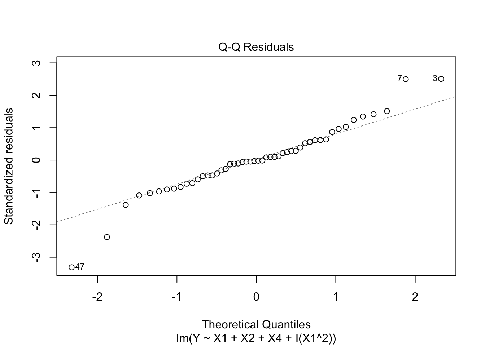
# get residuals
e <- residuals(mod_no_interaction)
# plot against each X
nms_x <- colnames(data_sample[, -1])
map2(data_sample[,-1], nms_x, function(x, nm) {
plot(x = x, y = e, main = nm)
lines(lowess(x = x, y = e), col = "red")
abline(h = 0, col = "grey")
})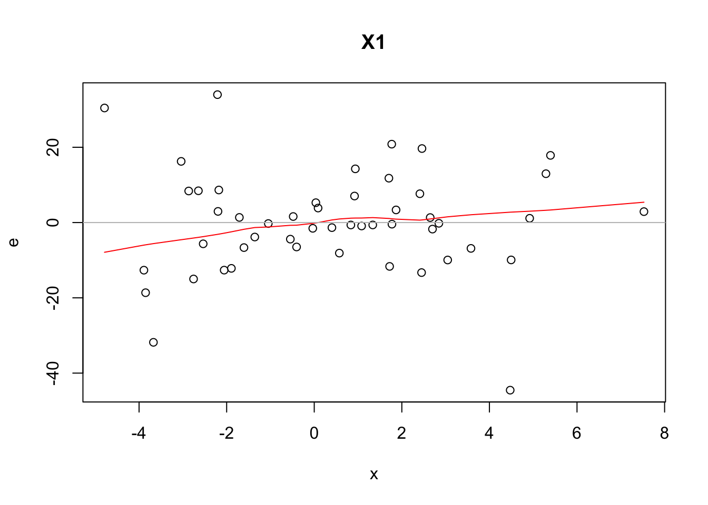
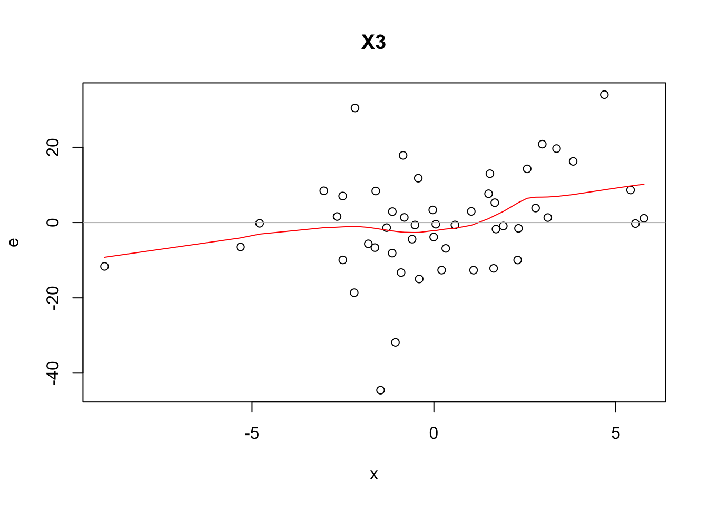
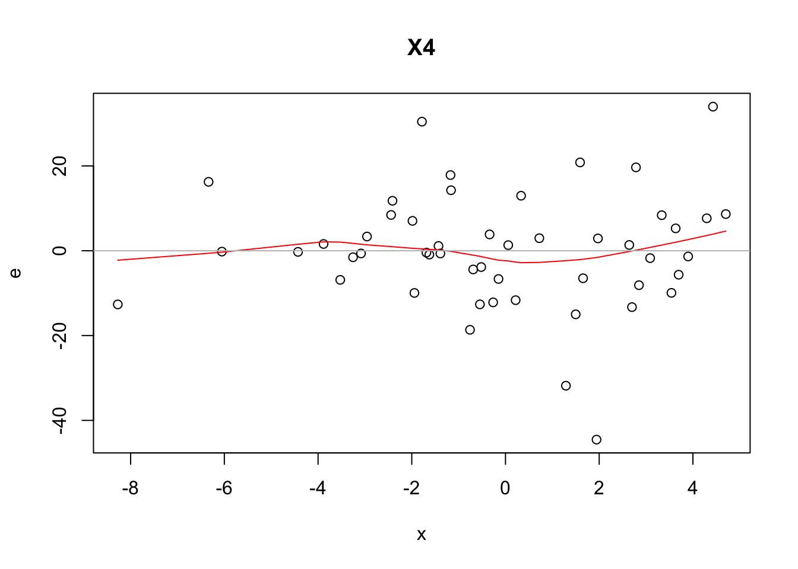
$X1
NULL
$X2
NULL
$X3
NULL
$X4
NULLNote that there is maybe a slight pattern with respect to \(X_1\) and \(X_2\), but definitely harder to detect.
hardt o tell if should include an interaction or not, obviosuly it should be based on the known true model.
Also note that again this hides the effect of missing \(X_3\), just like the previous one.